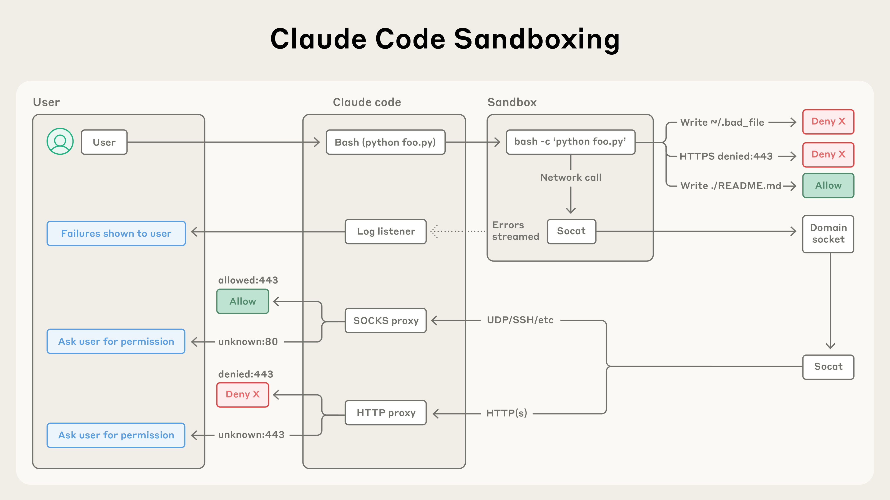

超越权限弹窗：让 Claude Code 更安全更自主
原文：Beyond permission prompts: making Claude Code more secure and autonomous 来源：Anthropic Engineering | 2025-10-20 作者：David Dworken, Oliver Weller-Davies 等
· · ·
索引
· · ·
在 Claude Code 中，Claude 与你并肩编写、测试和调试代码，导航你的代码库、编辑多个文件、运行命令来验证其工作。给 Claude 这么多对代码库和文件的访问权可能引入风险，特别是在 prompt injection 的情况下。
为了解决这个问题，我们在 Claude Code 中引入了两个基于沙箱的新功能，旨在为开发者提供更安全的工作环境，同时允许 Claude 更自主地运行，减少权限弹窗。在我们的内部使用中，我们发现沙箱安全地减少了 84% 的权限弹窗。通过定义 Claude 可以自由工作的边界，它们同时提升了安全性和自主性。
· · ·
问题：权限疲劳
Claude Code 运行在基于权限的模型上：默认是只读的，在做修改或运行任何命令前都会请求权限。虽然有一些例外（我们自动允许 echo 或 cat 等安全命令），但大多数操作仍需要明确批准。
不断点击"批准"会拖慢开发周期，并可能导致"批准疲劳"——用户可能不再仔细关注他们在批准什么，反而使开发变得更不安全。为了解决这个问题，我们为 Claude Code 推出了沙箱。
· · ·
沙箱方案
沙箱创建预定义的边界，Claude 可以在其中更自由地工作，而不是为每个操作请求权限。启用沙箱后，你会获得大幅减少的权限弹窗和增强的安全性。
我们的沙箱方案建立在操作系统级功能之上，实现两个边界：
- 文件系统隔离： 确保 Claude 只能访问或修改特定目录。这对防止被 prompt injection 的 Claude 修改敏感系统文件特别重要。
- 网络隔离： 确保 Claude 只能连接到批准的服务器。这防止被 prompt injection 的 Claude 泄露敏感信息或下载恶意软件。
值得注意的是，有效的沙箱需要文件系统和网络隔离两者兼备。没有网络隔离，被攻陷的 agent 可以泄露 SSH 密钥等敏感文件；没有文件系统隔离，被攻陷的 agent 可以轻松逃逸沙箱获得网络访问。正是通过同时使用两种技术，我们才能为 Claude Code 用户提供更安全、更快速的 agentic 体验。
· · ·
沙箱化 Bash 工具
我们引入了一个新的沙箱运行时（作为研究预览的 beta 版本），让你精确定义 agent 可以访问哪些目录和网络主机，无需启动和管理容器的开销。这可以用于沙箱化任意进程、agent 和 MCP 服务器，也作为开源研究预览提供。
在 Claude Code 中，我们用这个运行时来沙箱化 bash 工具，允许 Claude 在你设定的限制内运行命令。在安全沙箱内，Claude 可以更自主地安全执行命令而无需权限弹窗。如果 Claude 尝试访问沙箱外的东西，你会立即收到通知，可以选择是否允许。
我们在 Linux bubblewrap 和 macOS seatbelt 等 OS 级原语之上构建了这个功能，在 OS 级别强制执行这些限制。它们不仅覆盖 Claude Code 的直接交互，还覆盖命令生成的任何脚本、程序或子进程。
沙箱强制执行：
- 文件系统隔离： 允许对当前工作目录的读写访问，但阻止修改其外的任何文件
- 网络隔离： 只允许通过连接到沙箱外代理服务器的 unix domain socket 进行互联网访问。代理服务器强制限制进程可以连接的域，并处理新请求域的用户确认
两个组件都可配置：你可以轻松选择允许或禁止特定文件路径或域。

图：Claude Code 的沙箱架构隔离代码执行，具有文件系统和网络控制，自动允许安全操作，阻止恶意操作，仅在需要时请求权限。
沙箱确保即使成功的 prompt injection 也被完全隔离，不能影响整体用户安全。这样，被攻陷的 Claude Code 无法窃取你的 SSH 密钥或向攻击者的服务器发送数据。
Claude Code on the Web
今天我们还发布了 Claude Code on the web，让用户在云端隔离沙箱中运行 Claude Code。每个会话在隔离沙箱中执行，Claude 可以安全地完全访问其服务器。
我们设计了这个沙箱以确保敏感凭证（如 git 凭证或签名密钥）永远不在沙箱内与 Claude Code 共存。这样即使沙箱中运行的代码被攻陷，用户也不会受到进一步伤害。

图：Claude Code 的 Git 集成通过安全代理路由命令，验证认证令牌、分支名和仓库目标——允许安全的版本控制工作流同时防止未授权推送。
· · ·
开始使用
- 在 Claude 中运行
/sandbox并查看配置文档 - 访问 claude.com/code 试用 Claude Code on the web
- 如果你在构建自己的 agent，查看我们的开源沙箱代码，考虑将其集成到你的工作中